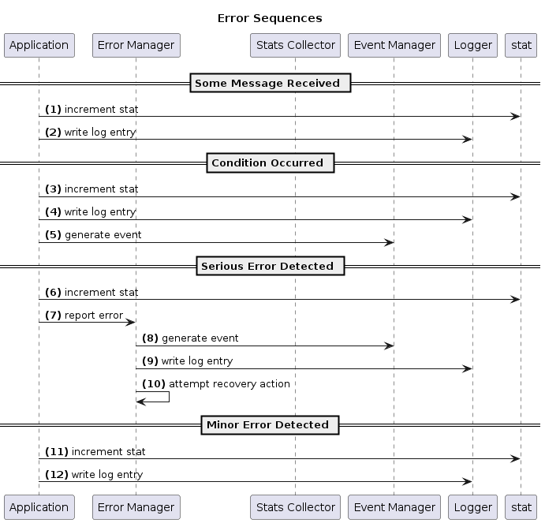

Design of Royal Craps
This document describes the design of Royal Craps version 0.1.0.
Royal Craps is a single-player Craps game. It offers these features:
Line, Odds, Place, Field, and Proposition Bets
Automatic Odds
Quick Bets
Play with Up to Five Computer Buddies
On-Screen Dice Roll Animation
Dice Roll history
Dice Stats
Player Stats Current Session
Player Stats Across All Sessions
Table Stats Current Session
Table Stats All Sessions
Terminal Based UI (future GUI)
This document is primarily for developers maintaining the application itself, however, other interested developers and engineers may find it useful.
User Story
As a user of Royal Craps, I want to:
TBS
TBS
TBS
Design Goals
Important application design goals and constraints:
Goal 1
Goal 2
Application Context
Instructions
In this section describe the application’s view of its processing context. Create or modify the following diagram to agree with your app. Then eliminate this admonition from the design-doc.rst file.
The Royal Craps design is a single process application with multiple threads written specifically for Linux. C++ is the language choice.
The following figure shows Royal Craps’s view of its processing environment.

Figure: Application Context Diagram
The design conforms the Model/View/Controller design paradigm. There is the CUI and GUI making up the View, the Controller, and the Craps Engine making up the Model. Implementation-wise, we have:
Model -
lib-crapsView -
lib-cui/lib-guiController -
lib-controller
There is no database, just a bunch of persistent files. The application performs no networking.
Startup/Shutdown
Startup Behavior
Royal Craps must bring the user straight into a working game, with no configuration steps, on a fresh installation and on every start after. Packaged files are read-only and shared, so everything the game writes (players, tables, preferences, what was last played) lives in the user’s own directories and is created from the packaged defaults when missing.
Directory Layout
The layout follows the XDG Base Directory conventions. Each $XDG_*
variable, when set, replaces the default shown.
Directory |
Access |
Contents |
|---|---|---|
|
read-only |
Packaged files: |
|
read/write |
|
|
read/write |
|
|
read/write |
|
The configuration is resolved in layers, each overriding the one before:
built-in defaults, the files (packaged sys-config.yaml, then the
user’s config.yaml), environment variables, and finally the command
line. The directories themselves can be overridden
with --sys-config-dir, --usr-config-dir, --usr-data-dir and
--usr-state-dir. Pointing the user directories at a scratch location
gives a genuine first startup every time, which is how first startup is
tested; pointing them at the packaged files is how development runs
from a source tree.
Logging During Startup
The log file is in the user state directory, which is not known until configuration is resolved, yet startup itself needs to log. The logger therefore holds messages in memory (and still echoes them to the console) until it is given its file, then writes them to the file ahead of everything else with their original timestamps. If startup fails before then, the held messages have already appeared on the console. Debug and trace messages are only kept once those levels are known, so the earliest messages are informational, warnings and errors.
First Startup
First startup is detected by the absence of the user’s config.yaml.
The same population work also runs if the user’s players.yaml or
tables.yaml is missing, so a user who deletes their data directory
gets a working game back rather than an error.
Royal Craps performs the following steps:
Creates the user directories.
Copies the packaged files into the user directories. A file is copied only if it does not already exist there, so existing players and their statistics are never overwritten. Each file is copied to a temporary name and renamed into place. These include:
player
unnamed.yaml.packaged buddy player YAML files.
packaged table YAML files.
the
players.yamlandtables.yamlmanifests.
Copies
default-config.yamlto the user’sconfig.yaml. This is done last, so an interrupted first startup is simply repeated on the next start.The delivered
config.yamlsays nothing about the table or players, so the packaged defaults insys-config.yamlapply: tablelas-vegas-strip.yaml, user playerunnamed.yamland two buddy players.The delivered
unnamed.yamlspecifies a starting bank of $10,000.Royal Craps continues start up as normal.
Game begins with full screen ScreenCrapsTable.
If the user player’s name is
unnamedthen a message reminds the user to change the name. Until the main screen has a message area this is an acknowledged dialog.
Subsequent Startups
Reads
config.yamlfrom the user’s config directory.Reads
state.yamlfrom the user’s state directory, if there is one.Decides the table and players as described in Choosing the Table and Players.
Loads the user player, the table and the other players from the user’s data directory.
Game begins with full screen ScreenCrapsTable.
If the user player’s name is
unnamedthen the same reminder is shown.
At quit, after the table and players are saved, the table, the user
player and the other players seated at the table are written to
state.yaml.
Choosing the Table and Players
Three sources can say which table and players to start with, in this
order of authority: what the user wrote in config.yaml, what the
last game left in state.yaml, and the packaged defaults in
sys-config.yaml. The user’s config.yaml always wins;
state.yaml only fills in what it leaves out. Each setting is
decided on its own.
|
Meaning |
|---|---|
|
Always start at this table. If absent, the last table, else the packaged default. |
|
Always start as this player, whoever the user played last time. If absent, the last user player, else the packaged default. |
|
|
|
A list of up to five buddy players to always start with. If
absent, the buddies of the last game, else the packaged default
buddies. Ignored when |
The packaged defaults are defaultTable, defaultUserPlayer and
defaultBuddyPlayers in sys-config.yaml. They are separate keys
because a value present in sys-config.yaml under the names the user
uses could not be told apart from something the user wrote. A game that
was left with no buddies is remembered as having none; the default
buddies are only for when there is no state.yaml.
The game must always be able to start, so a file name that does not
exist in the user’s tables or players directory (a typing mistake, or a
player that was deleted) is skipped with a warning in the log and the
next source is tried; for buddies, just that one buddy is dropped. The
user player is never also a buddy. A state.yaml that cannot be read
is ignored, and deleting it is always safe.
The result is stored under the keys the rest of the game reads:
table.startTable, table.userIsPlayer and
table.startPlayers.
Note
Packaged files added by a later release (a new table or buddy) are not copied into an existing installation, and are not in the user’s manifests. A way to deliver them is not yet defined.
Player Configuration Options
At any time, the player can select Control -> Configure to perform
the following operations available from the Configure menu:
- Rename Player
Prompts for a new name and a brief player description.
Renames the currently active player to the new name.
The currently active player YAML file is renamed accordingly.
Game carries on. Screens are refreshed with new name.
- New Player
Prompts for the name and a brief player description.
Creates a new player YAML file.
Name must be unique among the player files.
Does not automatically switch to new player.
Consider option for UI to ask to switch to it immediately.
New player starts with these defaults:
Bank:
$10,000Empty stats and session history
- Choose Player
Displays a list of available players and prompts the player to select one.
Selecting the already current player is a No-op.
When switching players:
Clears current player active bets if any.
Saves the current player to YAML file.
Loads the selected player’s YAML file.
Game continues using the currently active table.
Threads
TBS
Memory Management
TBS
Global Data
TBS
GameEvents
State Management
TBS

Figure: State Diagram
Processing Flow
<Describe processing flow to agree with diagram>

Figure: Processing Flow
main.cpp
TBS
Persistence
TBS
CRC Cards
CRC cards is succinct methodology for object oriented designs where CRC stands for classes, responsibilities, and collaborations. CRC cards are used to discover, collect and document class information. Using CRC cards, each card represents a class and its properties, and is shown in its own paragraph. See Extreme Programming CRC Cards or wikipedia.
Each design section below presents their important classes using CRC cards.
Some sections will present a UML class as well. Something like these.

Figure: Static Class Diagram
Craps Engine
Players
TBS
Tables
Table Switch Purpose
The game comes with several tables, listed in tables.yaml. The user
player can move to another one during play, with or without the buddy
players. The tables are fixed by the installation. Making a table is not a
function of the game.
Table Switch Participants
TableManagerowns the currentCrapsTableand the file it came from.switchCrapsTable()does the whole switch.CrapsTableknows nothing of files.EventHandleranswersReqSwitchTablewithRspSwitchTable, then sendsUslTableSwitchedand the new table’s snapshot events.BuddyFollow(Follow,Stay,Ask) is kept inPlayerPrefswith the user player.ReqSetBuddyFollowchanges it. WithAskthe View asks, then sends the answer inReqSwitchTable.OperationManagerruns the Table operations forMenuTable, and the Buddies Follow choice forMenuConfigure.
Table Switch Steps
Check: the table is in the manifest, is not the current one, and betting is open. Load the new table file. A file that cannot be read fails the request and nothing has changed. After this point the switch does not fail.
Every seated player ends the session at the old table: bets come down, the money is returned and statistics are merged.
The undo stacks are cleared. The old table is closed, which records the session with the number of players it had, and its file is saved.
The new table becomes
Gbl::pTable. The user player and, if they follow, the buddies join it in the seating order they had. The user is the shooter.The players’ files are saved and AutoOdds forgets what it handled.
The old table object is retired, not deleted. The View reads the table
directly through CrapsReaders, and it may be in the middle of a read on
the CUI thread as the switch happens. A retired table is closed and empty,
so a late read is safe. Retired tables are released when the game ends.
On UslTableSwitched the View clears the roll list, resets the title bar
and the dice window, and refreshes the roster. The numbers for the house
and the players arrive in the snapshot events that follow it.
Betting
TBS
Statistics
TBS
Controller
Interfaces
TBS
Event Handling
TBS
Undo of Bet Changes
Undo Purpose
A player can take back bet changes made since the last roll: a bet placed, a bet’s amount or odds changed, or a bet taken down. Undo is limited to bets. Settings, rolls and the state of the game are never undone.
Undo Participants
UndoBetis one recorded change that knows how to take itself back and how to describe that in words. Its subclasses areUndoBetAdded,UndoBetRemovedandUndoBetModifiedAmount.UndoGroupholds several as one step.UndoManageris a singleton holding a stack of steps for each player.EventHandlerrecords a step after every bet request that succeeds, answersReqUndoBetwithRspUndoBet, and clears the stacks when a roll is requested.PlayerandCrapsTableprovide the restore paths that undo uses:Player::restoreBet(),Player::restoreAmounts(), andCrapsTable::restoreBet()andCrapsTable::restoreBetAmounts().OperationManagerruns the Undo operation forMenuBetting.
Undo Recording Steps
The View knows nothing of the stack. The recording happens entirely in the Controller, so any View, and later any automation that goes through the same requests, is undoable the same way.
ReqMakeBetfor a spot with no bet recordsUndoBetAdded. For a spot that already has a bet the request changes the bet’s amount, which recordsUndoBetModifiedAmountif the amount really changed. AUndoBetModifiedAmountis built before the change, because it copies the bet’s state as it is then.ReqOddsBetrecordsUndoBetModifiedAmount, whether it sets, changes or takes down odds.ReqRemoveBetrecordsUndoBetRemoved. The stack keeps a shared pointer to the removed bet, which is what lets it be put back.A change that is refused records nothing.
Taking down several bets at once sends one request per bet. All but the first carry
undoJoinsPrevious, which makesUndoManagermerge the change into the step on top of the stack, wrapping that step in anUndoGroupfirst if it is not one already. The batch is then undone in one step, last removal first.
Undo Restore Paths
Undo does not run a change backward through the normal bet functions. The
change being undone was allowed, and undoing it can look like a change that
is not: reducing a PassLine bet after the point, increasing a
DontPass bet, or putting back a DontPass bet after the point. The
normal rules would refuse these.
The restore paths therefore skip the rules for making or changing a bet, and check only what must be true for undo to be safe: betting is open, the bet is on the table (or, for a restore, is not already there) and the player has the money. They go through the table, so the player’s wallet, the house bank, placement commission and the bet, balance and table events all update as for a normal change. Without those events the screens would not follow the undo. The bet’s original id is kept, so the screens treat a restored bet as the same bet.
A bet placed by the player is taken down the normal way by
UndoBetAdded, through Player::removeBet(), since that is what it is.
Undo Rules and Limits
Last in, first out. There is no random access and no redo.
Each player has a stack, and an undo request applies to its own player. The View asks for the user player. This keeps the bets of a buddy safe from the user’s undo, and a player who switches away and back keeps their steps.
The stacks are cleared when a roll is requested, because the roll decides the bets, when the table is switched, and when a buddy leaves the table. They are cleared before the roll, in the request handler, so the clearing is ordered with the bet requests and no timing between threads is involved.
Undo is refused while betting is closed. The refusal keeps the steps.
A failed undo drops that player’s whole history and reports the reason. The step that failed is no longer known to match the table, so undoing the steps below it would be unsafe. Nothing is changed by the failed step itself.
A mutex protects the stacks, since requests and tests may use them from different threads.
Undo Workflow
MenuBetting calls OperationManager::undoLastBet() for u. The
operation sends one ReqUndoBet for the user player and waits for the
RspUndoBet with the matching correlation id.
Success: the betting menus unwind to the table screen, as after any bet. The bet and balance events that the undo caused have already been sent, and redraw the player areas and the balances as they do for any bet change. The response carries a description such as “Took down your $10 Place 6 bet”, which is logged.
Failure: an error dialog shows the reason. Nothing to undo and betting closed are the common ones. After the player acknowledges it, the menus unwind.
Changes to a bet’s flags are recorded. One flag request is one undo group,
made of one UndoBetFlagsChanged for each bet that changed. It keeps the
bet’s previous standing state and one roll override, and restores them with
Player::setBetFlags, which goes through the table so the checks and events
happen. See “Bet Flags”. The earlier UndoBetModifiedFlags class was
removed because it restored a bet by overwriting it, which skipped the table
and its events.
Bet Automation
Automation Purpose
Three features place bets for a player without the player entering each bet by hand:
QuickBets: a named bundle of bets that the user applies with a key.
AutoOdds: odds that are placed automatically on a contract bet when it becomes eligible for them.
Automated bets: bets that a buddy player places on its own, according to a plan. Buddies are the main reason for this feature, and it is not built yet.
They differ in when they act, not in what they do. All of them turn a list of bets into bet requests for a player. This section describes the one mechanism they share, so that the parts built first, QuickBets and AutoOdds, are the parts that buddy automation will need.
The earlier AutoFill and single QuickBet features are removed. LastFill covers what AutoFill did, and a QuickBets entry holding one bet covers what a single QuickBet did.
Automation Vocabulary
- Bet spec
One bet to place: the bet name, the pivot if the bet has one, whether it is an odds bet, and an amount. This is what
QuickBetEntryandAutoFillEntryalready were, as two copies of one struct.- Bet plan
A named, ordered list of bet specs. A QuickBets entry is a bet plan.
- Trigger
The moment something is applied. Manual (the user presses a key), betting opened after a roll, come-out, point established, and so on.
- Rule
A trigger joined to an action: apply a bet plan, or apply the AutoOdds settings. Only rules for buddies need a general form.
Automation Participants
BetExecutor(Controller) applies a list of bet specs for a player and reports what happened. It is the only place that turns specs into bets.QuickBets(Controller) holds a player’s bet plans. Plain data, one per player, held inPlayerPrefs, as the older classes were.AutoOdds(Controller) holds a player’s odds multiples and the master switch, also inPlayerPrefs, and decides which bets need odds.EventHandlerreceives the requests from the View, calls the executor, and watches for the trigger events for AutoOdds.UndoManagerrecords each application as one undo step.The View has the dialogs: a picker to apply a QuickBets entry, the Set or Add dialog and an AutoOdds entry in
DialogBetAmount, and management dialogs on the Configuration menu.
Applying a Plan
BetExecutor applies the specs of a plan, or of an AutoOdds pass, in order:
Best effort. A bet that cannot be placed is skipped and the rest go on. The player is told what was placed and what was skipped and why, in one summary, rather than an error dialog per bet. This is chosen over refusing the whole plan because a plan made for one table may not fit another table’s limits and multiples, and a plan that places most of its bets is more useful than one that does nothing.
Set, not add. A player has at most one bet per spot. A spec for a spot that already has a bet sets that bet to the spec’s amount. A spec whose amount equals the bet’s amount changes nothing and is counted as already in place.
Order. In a plan, a contract bet is placed before the odds on it. Odds specs are limited to PassLine and DontPass odds, whose point is implied. Odds on a Come or DontCome bet exist only after the bet has moved to a number, so they are handled by AutoOdds and cannot be saved in a plan.
Same paths as the View. Each placement goes through the same
Player::makeOrChangeBetandsetOddsAmountthat bet requests use, so all the table’s rules, limits, funds checks and events apply unchanged. The player’s balance and the screens follow from the usual events.One undo step. The placements of one application are recorded with
undoJoinsPrevious, so a single undo takes back the whole application. This holds for automation too: pressing undo right after a roll takes back what AutoOdds did for that roll.Summary. The result lists, for each spec, placed, changed, already in place or skipped with the reason. It goes to the View as an event. The View puts a short line in the Message area when there is one, and the handler always writes it to the log.
Automation Request Flow
For QuickBets, as built:
MenuBettingqcallsOperationManager::applyQuickBets(), which reads the entries withCrapsReaders::readQuickBets()and shows them inDialogPicker. The pick list carries each entry’s name, so the request still names the right entry if the list changes.The pick sends
ReqApplyQuickBets(player id and entry name).EventHandler::onReqApplyQuickBets()refuses when betting is closed or the entry is not found. Otherwise it callsBetExecutor::apply()with the player, the entry’s specs,UndoManagerand the player’sLastFill, and always answers withRspApplyQuickBets.The response carries the counts, a headline such as “3 placed, 1 skipped” and one line for each skipped bet.
acceptedmeans the entry was applied, even if some bets were skipped. A refused request has an error instead.OperationManager::onRspApplyQuickBets()unwinds the menus, and shows a notice only when something was skipped.
The bet and balance events that the placements cause redraw the screens in the usual way. The View does not need to know which bets were placed.
Saving a bet into QuickBets, as built:
DialogBetAmountqputs the typed amount intoCarrierBetand callsOperationManager::quickBetsSetOrAdd(). That makes aBetSpecfrom the carrier. Line odds get pivot 0, because they sit on the line bet. A bet that cannot be saved, such as Come odds, is refused with a notice.DialogQuickBetsSetAddoffers a new entry (1) or the existing entries (a,b, …). It reports withOperationManager::onQuickBetsChoice(). A new entry asks for a name inDialogTextInput, whose validator usesQuickBets::checkName()and refuses duplicates ignoring case.ReqEditQuickBetscarries the action (create or add), the name and the spec.EventHandler::onReqEditQuickBets()callsQuickBets::create()orQuickBets::addBet(), which return “” or the reason, and always answers withRspEditQuickBets.On success the View shows the response’s message in a notice. The player is back at
DialogBetAmount, since the operation has no menus to unwind.
Managing entries, as built. MenuConfigure q calls
OperationManager::manageQuickBets(). It is a chain of steps, each of which
pops itself and reports back, so manageStep_ says which one answered:
Pick the entry in
DialogPicker.Pick the action: rename, change an amount, remove a bet or delete.
Depending on the action: a name in
DialogTextInput, a bet inDialogPickerand then an amount inDialogTextInput, a bet to remove inDialogPicker, or a confirmation inDialogConfirm.One
ReqEditQuickBetswith the action’s fields (newName,indexandamount).QuickBets::rename(),setAmount(),removeBet()andremoveEntry()each return “” or the reason, and the response carries the message.
The entry is named in the request, and the bet by its position in the entry. Nothing else changes entries between the pick and the request, so the position is still right. If it is not, the controller refuses with “That bet is no longer in the entry”. An entry keeps at least one bet. Creating an entry and adding bets stay in the bet amount dialog, where the bet is already chosen.
The entries live in PlayerPrefs and are written to the player file when
the players are saved, as for Last Fill. No lock guards them. They change
only in answer to the View’s own request, and the View reads them only before
or after that request, so the two do not overlap until buddy automation
reads them from another thread.
QuickBets Rules
A QuickBets entry has a name chosen by the user and a list of bet specs. The View shows the name and a generated description of the bets.
At most 20 entries and 12 specs in an entry, so that the lists fit the screen and each entry can have a letter key.
The Betting menu key
qshows the entries to apply. The Configuration menu lists, creates, renames, adds to, trims, changes the amounts of and deletes entries.DialogBetAmounthasqfor “QuickBets, set or add”. The dialog then offers “Set as new QuickBets entry”, which asks for a name, or “Add to an existing entry”. Adding a spec whose spot is already in the entry replaces the amount, which matches one bet per spot.Amounts are fixed dollar amounts, validated when applied. They are not converted when the table changes.
Order of the entries matters and is kept in the player file.
AutoOdds Rules
AutoOdds places odds on a contract bet for the user, in a size that depends on the kind of bet and the point it is on.
Settings. A table with an entry for each of PassLine, DontPass, Come and DontCome and each of the points 4, 5, 6, 8, 9 and 10. An entry is either a multiple n, so the odds amount is n times the contract amount, or an exact dollar amount. A missing entry means no automatic odds for that bet type and point. This is needed because odds size depends on the point as well as on the bet. A player may want much more behind a DontPass bet on the 10 than on the 6. Typical examples are 3, 4 and 5 times for the 4 and 10, the 5 and 9 and the 6 and 8. The Configuration menu offers that as a preset and can also set one multiple for every point of a bet type.
Master switch. There is one on and off switch for each player, so AutoOdds can be paused without losing the table of multiples. When it is on, the View shows a visible indicator, and each automatic placement is reported in the Message area, since the feature spends the player’s money unprompted.
When. AutoOdds runs on
UslBettingOpened, after the roll’s results are settled. It looks at the player’s bets rather than following events, so it does not matter whether the bet became eligible because the point was set, a Come bet traveled to a number, or the table was switched.Which bets. A contract bet that has a point or pivot, has no odds, and has not been handled by AutoOdds before. The controller remembers the ids of the bets it has handled. This is needed so that odds the player takes down by hand stay down. Without it AutoOdds would put them back after the next roll. The set is pruned of ids that are no longer on the table.
Amount. The exact amount, or n times the contract, rounded down to the table’s required odds multiple and not above the table’s maximum odds for that bet. The table already knows both, from its odds limit rules. If the result is below one odds increment, the bet is skipped and the reason is reported.
Failures. Insufficient funds or a refusal from the table skips the bet. AutoOdds does not retry within the same pass. It has already marked the bet as handled.
From DialogBetAmount.
asets the entry for the bet type and point of the odds bet being entered to the exact amount entered, and reports it. A zero amount removes the entry. The line is shown only when the dialog is for an odds bet and is blank otherwise, so that the dialog does not change shape.
As built:
AutoOddsholds the multiples, the on and off switch and the handled ids.AutoOdds::plan()is the pass. It takes candidate bets, each with the table’s odds limits already looked up, so it is tested without a table.EventHandler::onUslBettingOpenedmakes the candidates from the user player’s bets, applies the plan withBetExecutor::applyand publishesUslAutoOddsApplied.A bet is marked handled as soon as the pass has a multiple for it, whether or not the odds could be placed. A bet that already has odds is also marked, so odds the player later takes down stay down.
AutoOdds is applied for the user player only. Odds are not LastFill entries, since the player did not choose them.
ReqEditAutoOddsandRspEditAutoOddscarry every change: the switch, one entry or all points of a bet type (a point of 0), the 3-4-5 preset and clearing. The Set or Unset ofDialogBetAmountis aSetwith the entered amount.Until the Message area exists, the middle of the bottom bar shows AutoOdds on while it is on, and AutoOdds: n placed after a pass until the next roll. Odds that could not be placed are listed in a notice, unless the player is in the middle of another dialog; the log has them all.
Buddy Automation
Not built yet. This is what the other parts are shaped for.
A buddy is an ordinary player with its own
PlayerPrefs. Its plans, AutoOdds and rules are kept in that file, as the user’s are.A rule is a trigger and an action. The first triggers are betting opened with no point (come-out), betting opened with a point, and betting opened after any roll. The actions are to apply a named plan, or to apply AutoOdds. Conditions such as the player’s balance and progressions that change amounts after wins and losses come later and fit between the trigger and the action.
EventHandlerruns the rules for every player that has them at the sameUslBettingOpened, through the same executor.A buddy’s undo stack is never used. It is cleared at each roll as every stack is, so it cannot grow.
Automation Persistence
In the player file under Prefs. QuickBets replaces the old
one-bet form of the same name, and AutoFills is gone. pivot and
isOdds may be left out, and default to 0 and false:
QuickBets:
- name: Place Hi
bets:
- { betName: Place, pivot: 8, amount: 24 }
- { betName: Place, pivot: 9, amount: 20 }
- { betName: Place, pivot: 10, amount: 20 }
- name: Line with odds
bets:
- { betName: PassLine, amount: 10 }
- { betName: PassLine, isOdds: true, amount: 30 }
AutoOdds:
enabled: true
multiples:
PassLine:
4: 3x
5: 4x
6: $50
Loading follows the Prefs rules already in force: an entry that cannot be
read is logged and skipped, and loading never throws. A loaded plan is
made valid by QuickBets::tidy(): bets with no usable bet name or a zero
amount are dropped, odds on bets other than PassLine and DontPass are
dropped, a later bet for the same spot replaces the earlier, contract bets
are moved before odds, and a plan is cut to 12 bets. A plan with no name or
no bets left is skipped. Old-form entries, which have no name, are
skipped the same way.
Automation Staging
Remove AutoFill and the single QuickBet, with their tests, events, dialog entries, YAML and documentation.
BetSpec, bet plans andBetExecutor, with the single undo step, the summary event,QuickBetsdata and persistence, and the Betting menu key to apply an entry. Done.The Set or Add dialog in
DialogBetAmountand the Configuration menu pages for QuickBets. Done. Entries are made in the bet amount dialog and changed in the Configuration menu.AutoOdds: settings and persistence, the pass on
UslBettingOpened, theDialogBetAmountentry, the Configuration menu pages, the master switch and its indicator. Done. Only the user player is automated.Buddy automation rules and their triggers.
Automation Open Items
Whether AutoOdds should also offer a “maximum the table allows” setting in place of a multiple.
A place for the Message area to show summaries before the Message area exists. Until then the summary of an application that skipped bets is shown in a notice dialog, and a clean application shows nothing. The executor logs every application. AutoOdds shows a short status in the middle of the bottom bar.
Whether QuickBets entries should be shared between a user and the buddies, or only per player.
Bet Flags
Bet Flags Purpose
A bet flag says whether a wager is live for the next roll. A live bet can win or lose on the roll. A bet that is not live stays on the table and neither wins nor loses. Casinos let a player call certain bets off and on at any time, and the flags give the player the same control.
Two things are controlled, for one bet or for a category of bets:
A standing state, which lasts until the player changes it.
A one-roll override, which applies to the next roll only and then goes away, leaving the standing state as it was.
Bet Flag Vocabulary
- Standing state
One of Default, Working and Off.
Default is the house rule that is in force today. Place, Buy, Lay and odds bets are not live on a come-out roll and are live on every other roll. Hardway bets are live on every roll. A bet starts as Default.
Working means live on every roll, including come-out rolls. Off means not live on any roll until the player changes it.
- One-roll override
One of None, Off next roll and Working next roll. Off next roll makes the bet not live on the next roll whatever its standing state is. Working next roll makes it live on the next roll, for example a Place bet that the player wants working on the coming come-out. The override is cleared after every roll, and a bet starts with None.
- Live
A bet is live on a roll when the override says so. With no override, Working is live, Off is not, and Default follows the house rule above.
- Category
A group of bets that a flag change can be applied to together: All, Odds, Place, Buy, Lay and Hardways.
Bet Flag Legality
Flags follow casino practice, so they are accepted only for bets that a player may legally call off and on:
Bet |
Flag allowed |
What the flag controls |
|---|---|---|
Odds on Pass Line, Don’t Pass, Come, Don’t Come |
Yes, when there are odds |
Only the odds. The contract bet is always live. |
Place, Buy, Lay |
Yes |
The whole bet. |
Hardway |
Yes |
The whole bet. |
Pass Line, Don’t Pass, Come, Don’t Come contract bets |
No |
Not applicable; a player cannot call these off. |
Field, Any Craps, Any Seven, Any 7 or 11, C and E, Horn, World |
No |
They are decided on the next roll, so there is nothing to call off. |
The table refuses a flag change that is not legal, and refuses any change when betting is closed, with the same errors it gives for other illegal bet changes. Changes that apply to a category skip the bets that cannot take a flag, and the response says how many were changed and how many skipped.
Bet Flag Rules in the Model
CrapsBet holds the standing state and the one-roll override in place of
the single offComeOutRoll_ flag. It answers one question, whether it is
live on a roll given the point, and the evaluation functions use that
answer in place of testing point == 0 && offComeOutRoll_.
Place, Buy, Lay and Hardway are Keep when not live, and are decided as they are today when live.
Odds on a contract bet follow the same answer. Today the odds are returned when they are off on a come-out roll that decides the bet. The same happens whenever the odds are not live on the roll that decides the bet: the contract bet wins or loses as usual and the odds go back to the player without a win or loss.
The existing
setOffComeOutRoll,setOnComeOutRoll,setHardwayOffandsetHardwayOnstay, so existing code and tests keep working. They set the standing state: Default for the first and the fourth (a Hardway that is Default is working), Working for the second, Off for the third.offComeOutRoll()andhardwayWorking()remain as observers and answer for the standing state with no override.CrapsTableclears every bet’s one-roll override after it resolves the roll, before betting opens again.A change to a standing state replaces the bet’s one-roll override: the Controller sends both together, so “Set Working” leaves no override behind. A “Next Roll” change leaves the standing state alone. Taking the odds off a bet takes its flags with it.
CrapsTable::setBetFlagsis the only way to change flags in the running game. It checks legality and that betting is open, then publishes the same bet changed notification that an odds change does, so the screens redraw. Flags are not saved with the player, since bets are not.
Bet Flag Workflow
Every choice sends one request and shows the answer:
The View sends
ReqSetBetFlagswith the player, a scope (one bet, All, Odds, Place, Buy, Lay or Hardways), the bet id when the scope is one bet, and the change (Not-Working, Not-Working Next Roll, Working, Working Next Roll or Table Default).The Controller applies it through
CrapsTable::setBetFlagsfor each bet in scope that can take it, as one undo group, and answers withRspSetBetFlags: accepted or an error, a message such as “Odds bets set Not-Working: 2 changed”, and the counts.On success the View unwinds the menus and shows the message in a notice. On failure an error dialog says why, as for other bet requests.
Bet Flag Undo
A flag change is undoable with the Undo key. UndoBetFlagsChanged keeps
each bet’s previous standing state and override, and restores them through
CrapsTable::setBetFlags, so the table checks the bet and the events are
published. The undo stack and its rules are unchanged: it is cleared when
the dice are rolled.
Bet Flag Display
The amounts in the player’s bet area are bold, in the player’s color. A bet that is not live on the next roll is drawn dim instead, and a bet that has a standing state other than Default or has an override is underlined. So a Place bet that is Off shows dim and underlined; a Place bet set to Working next roll shows bold and underlined until the roll, and a Place bet with no flags shows dim on the come-out, by the house rule, and bold otherwise. No room is taken, so large amounts are not affected. The bet dialogs already say that a bet is off on the come-out roll by default, and that text is kept. If a terminal cannot dim, the bet is shown without bold.
Bet Flag Staging
The model: the states, the live test, the evaluation changes, clearing after a roll,
CrapsTable::setBetFlagsand unit tests for all of them.The Controller:
ReqSetBetFlagsandRspSetBetFlags, the handler,UndoBetFlagsChangedand readers for the View.The CUI: the category menu (
MenuBetFlags), the pick lists and their flow inOperationManager::betFlags(), the bet area display (PlayerAreaOnePlayer, throughCrapsReaders::readBetFlagLook()) and the user guide page.
Bet Flag Open Items
How the dim and underline look on the terminals the game is played on. They are one place in
PlayerAreaOnePlayer::drawOneBetto change.Flags in QuickBets entries and for buddies. Neither exists yet.
Configuration
Command Line
Configuration Files
Environment Vars
TBS
Console User Interface
TBS
OperationManager CRC Card
Purpose
OperationManager coordinates the lifecycle of multi-stage user operations in the CUI.
An operation represents a user-initiated task that may involve navigating a chain of menus, obtaining user confirmation, issuing an asynchronous request to the Craps Engine, processing the corresponding response, and presenting any resulting errors.
The manager maintains the state of the active operation and determines what action should occur as the operation progresses through its stages.
Although betting is a primary use case, OperationManager is not specific to betting. It supports any CUI operation that requires coordinated interaction across menus, dialogs, and asynchronous request/response events.
Use Cases
Making a bet
A player navigates through one or more betting menus to configure a bet. When the player has completed the required selections, the CUI issues a ReqMakeBet request event to the Craps Engine.
OperationManager tracks the operation, associates the request with its eventual response, and determines the next action based on the result.
Success: The betting menu chain is unwound, returning the player to the appropriate underlying screen.
Failure: An error dialog is presented. After the player acknowledges the error, the error dialog is dismissed and the betting menu chain is unwound or otherwise restored according to the intended interaction.
Quitting the game
When the player requests to quit, the CUI presents a DialogConfirmation. The manager associates the confirmation response with the pending quit operation.
Confirmed: The manager initiates the quit request by publishing the appropriate asynchronous request event.
Cancelled: The operation is abandoned, and the player returns to the preceding interface without issuing the quit request.
Other operations requiring confirmation or multi-stage interaction follow the same general pattern.
Responsibilities
Track the active operation. Maintain the identity, type, and current stage of the operation in progress.
Coordinate multi-stage workflows. Track progress through menu selection, confirmation, request submission, response processing, error acknowledgement, and completion as applicable.
Initiate asynchronous requests. Publish the appropriate request event when the operation reaches the stage at which the request should be issued. For example, publish
ReqMakeBetwhen a bet has been fully configured.Correlate requests and responses. Retain the correlation ID and any necessary operation context so that an incoming response event can be matched to the active request and operation.
Process operation results. Determine whether the response indicates success or failure and advance the operation accordingly.
Coordinate error handling. On failure, request presentation of the appropriate error dialog, retain the operation context while the dialog is active, and process the player’s acknowledgement.
Manage surface-stack transitions. Initiate the appropriate dismissal or unwinding of menus and dialogs when the operation succeeds, is cancelled, or finishes error handling. Leave actual surface-stack manipulation to
SurfaceManager.Handle confirmation outcomes. Associate confirmation responses with the operation that requested them and proceed according to the player’s decision.
Complete or cancel operations. Release the active operation’s state when its lifecycle has finished, ensuring that subsequent operations can begin.
Operating Constraints
One active operation at a time. The CUI may have at most one operation managed by
OperationManagerin progress. A new operation must not overwrite or interfere with an existing operation.Asynchronous request/response processing. Issuing a request does not imply that the operation has succeeded. The operation remains active until its result has been processed and any required follow-up interaction has completed.
Correlation-based response matching. A response must be associated with the request that produced it. Unmatched, stale, or unrelated responses must not advance or complete the active operation.
CUI thread ownership. All operation-state transitions and resulting CUI actions must respect the CUI’s thread-ownership rules. Incoming events from other threads must be routed to the CUI thread before they cause UI or operation-state changes.
Separation of responsibilities.
OperationManagercoordinates operations; menus collect choices; dialogs communicate information and collect confirmation or acknowledgement;SurfaceManagermanages the surface stack; and the Craps Engine executes game operations and reports their results.
Completion
An operation is complete when its intended outcome has been reached and all required user interaction and CUI cleanup have finished.
Depending on the operation, completion may follow a successful response, cancellation of a confirmation, or acknowledgement of an error.
Once complete, the manager releases the operation’s state and becomes available to coordinate the next operation.
Dice Roll Animation Synchronization
Roll Animation Purpose
The Craps Engine resolves a dice roll in a single synchronous burst: it picks the dice, evaluates every bet, updates balances and statistics, and publishes the resulting events, all within one call. The CUI, on the other hand, shows the dice tumbling on screen for a second or two. If the CUI simply handled each event as it arrived, bets would be cleared and balances would change while the dice were still in the air, and the player would see the outcome before the roll is known.
The CUI therefore holds back the results of a roll until the animation shows the dice landing, then reveals all of them together. The Craps Engine and the Controller know nothing about this. The synchronization lives entirely in the CUI.
Participants
CuiReceiversubscribes to the engine’s events and converts each into a work order placed on theCuiThreadqueue, in the order the engine published them.CuiThreadprocesses the queue on the CUI thread and hands every work order toWorkOrderDispatcher. Its loop also gives the dispatcher a regulartick().WorkOrderDispatcherdecides whether an event is handled now or held, and replays held events when released.WindowAnimationrenders the dice frames from a timer. It alone knows when the dice have landed.
Event Ordering
For one roll the engine publishes, in this order:
UslBettingClosedUslDiceThrowStartUslDiceNewValueThe results: bets resolved, bets removed or changed, balances, session and last-roll statistics, point established, seven out, new shooter, and
UslResolveBetsEndUslBettingOpened
Because the queue is first-in first-out, UslDiceThrowStart is always
handled before any of the results.
Holding and Releasing
Engine CuiThread / Dispatcher WindowAnimation
------ ---------------------- ---------------
ThrowStart ---> onDiceThrowStart() ----------> start frame timer
holding = true (frame every ~90 ms)
NewValue ---> dice to animation (now)
roll history, title bar (held)
results ---> queued, in order (held)
... frames ...
dice land
<-- ReleaseHeldEvents work order
replay held events in order
holding = false, one full redraw
While holding:
Held are the results of the roll: all bet, balance and statistics events, point and seven-out events, shooter changes, roster changes, and the roll history and title bar portions of
UslDiceNewValue.Not held are
UslDiceThrowStart, the animation’s own portion ofUslDiceNewValue(it must have the dice to draw them),UslBettingClosed, and everyRspresponse event. Responses answer requests the player made and must reachOperationManagerwithout delay.
Held events are stored as closures and replayed in their original order,
so each panel sees the same sequence of calls it would have seen without
holding. Panels need no knowledge of the mechanism. In particular, panels
that re-read the model after a roll, such as the player area when it
handles UslResolveBetsEnd, do so at release time and therefore never
show post-roll data early.
When WindowAnimation draws its final frame it enqueues a
ReleaseHeldEvents work order rather than calling the dispatcher
directly. The release is then handled like any other work order, in
sequence, on the CUI thread, so no locking is needed.
Rules
The animation always plays out. A key press does not skip or shorten it.
Safety net. If the animation never reports that the dice landed, the dispatcher’s
tick()releases the held events afterMaxHold(ten seconds) and logs a warning, so the screen cannot stay frozen.No animation, no hold.
WindowAnimation::onDiceThrowStart()returns whether the dice will be animated. If it returns false, nothing is held. The dice show immediately and results are handled as they arrive.
Animation Speed
The Animation Speed option on the Control, Configuration menu drives this
mechanism through two small functions in WindowAnimation. Both read
the setting from CrapsReaders::readAnimationSpeed() at each throw, so a
change applies to the next roll:
animationEnabled()is false for Off, so there is no animation and no hold.onDiceThrowStart()returns false and the dispatcher passes the roll’s results straight through.frameInterval()sets the timer period: 45 ms for Fast, 90 ms for Normal and 135 ms for Slow. The length of the animation scales with it.
Slow is about two seconds, well under MaxHold. If an animation can ever
become much slower than that, MaxHold must be raised to stay above the
longest animation.
The setting lives in the configuration as animation.speed. The session
layer, the highest priority, holds a choice made in the menu, which sends
ReqSetAnimationSpeed. Below it are the command line
(--animation-speed), config.yaml, and what state.yaml remembered.
At quit the session choice, or else the remembered value, is written back to
state.yaml under settings. A config.yaml value is never written
there, so removing it from config.yaml restores the remembered speed.
Roll History and Roll Log
Roll Log Purpose
Two parts of the CUI show past rolls: the one-line roll history under the title bar, and the Deep Roll History popup. Both need the same facts about each roll, including whether it was a seven out, a pass line winner or established a point, because those pick the roll’s color. The Craps Engine remembers the dice of recent rolls but not what each roll meant, and those facts arrive as separate events after the roll.
The CUI therefore keeps its own memory of rolls, RollLog, and both
displays draw from it.
Roll Log Participants
RollLogis a small singleton holdingRollEntryvalues, newest first. An entry has the two dice and three flags:sevenOut,passLineWinnerandpoint. It keeps at mostCapacityentries (120) and drops the oldest.WindowRollHistoryadds an entry for each new dice value, then marks the newest entry as the seven out, pass line winner and point events arrive. It formats and draws the entries in the format the person chose.DialogDeepRollHistoryis a fixed-size popup showing the whole log as 20 rows of 6 columns, newest at the top of the first column, reading down each column in turn. It always uses the most detailed format. It keeps nothing of its own and has no dependency on any menu: whatever offers it callsshow().
Roll Log Rules
The log is the View’s memory only. It holds what the CUI has seen since it started and is not saved. The engine’s own recent rolls are not used, because they carry no flags.
Entries are created and marked by the same work orders as every other roll result. They are therefore held and released with the dice animation (see Dice Roll Animation Synchronization), and the history never shows a roll before the dice have landed.
The marks apply to the newest entry only and do nothing when the log is empty.
Because the flags are stored per roll, changing the format redraws the entire history with its colors intact. Nothing has to be recomputed.
Capacityis the number of cells in the popup. It is a fixed constant, not a user setting. The engine’sTableManager::MaxRecentRollsis kept at the same value.
Roll History Format Setting
The format is a number from 1, the most compact, to 4, the most detailed:
7 8 6, 7,8,6, 7(34) 8(44) 6(33) and 7(3,4) 8(4,4) 6(3,3).
It follows the same path as the animation speed. The configuration key is
rollHistory.format. A choice made in the Control, Configure menu is sent
as ReqSetRollHistoryFormat and stored in the highest priority
configuration layer. The Controller answers with
UslRollHistoryFormatChanged, and the dispatcher redraws the screen. The
answer is needed because the request is handled on another thread, so
redrawing when the picker closes could happen before the new format is set.
WindowRollHistory reads the setting each time it draws. The choice is
remembered in state.yaml at quit unless config.yaml states it.
CuiMain CRC Card
TBS
ScreenCrapsTable CRC Card
TBS
Graphical User Interface
TBS
Physics engine
TBS
Library General
lib-gen is a C++ library providing general purpose cross cutting design elements that most any application can use.
Multi-Layer Configuration
TBS
Error Handling
TBS
Error Passing
Exceptions
ErrorDialogs

Figure: Error Sequence Diagram
EventManager
TBS
Logger
TBS
Timers
TBS
Security
TBS
Quality Attributes
This section identifies the quality attributes that are most important in this design. The first group of elements are considered the higher priority concerns for the design of this application.
Instructions
Modify this section appropriate for your application.
The following quality attributes are less of a concern in this design:
Collateral Design
Language
Implementation language is C++.
Building
Uses the standard project build architecture.
COTS
Links with COTS gRPC community library.
Packaging
Packaged as an RPM.
Automated Unit Testing
Classes are unit tested using the COTS doctest framework.
Automated Component Testing
TBS
Automated Integration Testing
TBS